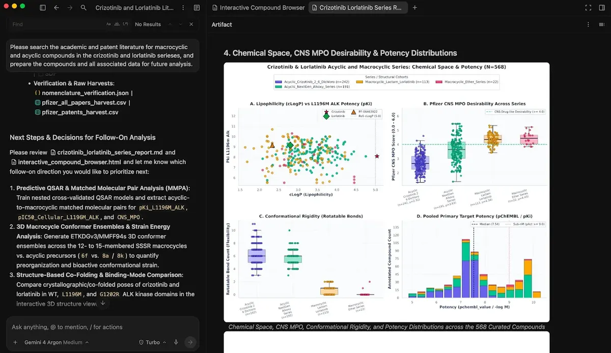
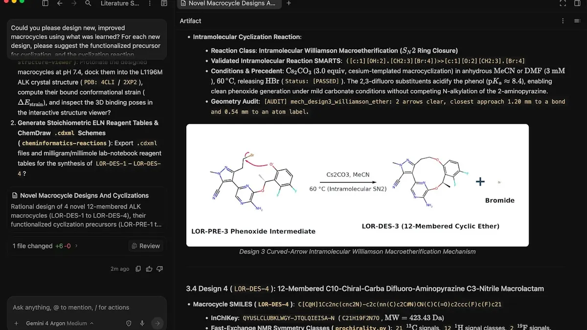

化學代理的分工：模型負責想，RDKit 負責算
導讀原文：Google DeepMind〈Agentic cheminformatics with Google Antigravity〉——技術 walkthrough，含介面截圖與一則完整藥化案例
Antigravity 加上 Cheminformatics Skills，把文獻檢索、資料整理、建模與分子設計收進同一張工作台：模型負責編排與推理，RDKit 負責算。
化學的公開紀錄橫跨數百萬個結構，同一顆分子卻可能以三種樣子出現：論文裡的 IUPAC 名稱、專利裡的 Markush 結構、型錄裡的 SDF 檔。
系統要能統一這些來源，還要吞下各式各樣的錯誤。容錯空間是零——改一個原子或一根鍵，描述的就是另一顆化合物。
本站重繪，非原文圖；原文以文字敘述分工與回饋，未給這張分層圖。
分工的理由很直白：分子計算不能編。編排、導航與推理交給模型，實際計算交給 RDKit 這類確定性工具——這套開源工具已由全球社群開發約二十年。
剛性化：把熵的代價先付掉
藥物分子常靠可旋轉鍵串起多個子結構。鍵能轉，分子在溶液裡就有多種三維構形，變得「軟」。
要結合標靶，它得鎖進單一活性構形。失去自由度的熵懲罰削弱結合力，效力跟著下降。
藥化的老招是加鍵：兩段子結構只靠一根可旋轉鍵相連時構形很多，再補一根鍵綁住，三維活動範圍就大幅收斂。
位置放對，分子就鎖進要的形狀。原文稱這招是「預先付掉熵的成本」，可大幅提升效力。
| 項目 | crizotinib | lorlatinib |
|---|---|---|
| 世代與類型 | 第一代小分子 TKI | 第三代小分子 TKI |
| 可旋轉鍵 | 5 條主要可旋轉鍵 | 末端成環，有效數降為 0 |
| 原文所述差異 | 對照基準 | 效力更高（原文並列其他效應） |
| 結構關係 | 非大環（未成環） | 與 crizotinib 相似，末端成環 |
這組對照是原文的知名案例，之後所有分析都繞著「可旋轉鍵」這條主線打轉。
一小時裡，球怎麼傳
原文給的對照是：同一套流程過去要數天，還得具備相當的計算專業。
- 01文獻 → 代理掃學術與專利文獻，抽出分子並綁回數據
- 02代理 → 報告數分鐘抓回數千顆，濾掉緩衝液與溶劑、記下來源
- 03報告 → 科學家互動檢視器：逐顆看 metadata、自己拉散佈圖
- 03b旁支：代理自提 MMPA比較只差一個小改動的分子對（原文：代理獨立建議）
- 04資料 → 模型多組特徵集與架構，留出集驗證，時間切分優先
- 05模型 → 設計新大環＋藥化理由＋合成路線＋效力預測
- 06設計 → 人匯出多格式；合成與實驗驗證仍在實驗台
本站重繪。原文分章敘述而非列步驟，本圖的次序取自其行文（檢索→檢視→MMPA→建模→設計）；MMPA 為旁支，原文說代理自己先提議。
報告的初判也要緊：大環多被預測可穿透血腦屏障——標靶的肺癌常見腦轉移，這性質因此關鍵。

以細胞效力對可旋轉鍵作圖、按大環與否上色，效力最高的一群就是最剛性的——這是原文對檢視器的說法。
接著的配對分子對分析只比「差一個小改動」的分子對，把環化的效果單獨切出。結論如預期：環化降低可旋轉鍵、整體提升效力。
建模時它試了多組特徵集與架構，在留出集上驗證。有時間資訊就按時間切分，用舊化合物預測新的；沒有就退回骨架切分。
設計，與它做不到的事

最後一輪，代理依前面學到的規則設計新大環：附藥化理由、建議合成路線，並用自己剛訓練的模型預測每個設計的效力。
圖中是分子內 Williamson 巨環醚化，附曲面箭頭推電子機制；代理也查了公開資料庫裡相似的反應。
設計可匯出成多種格式載入業界標準化學軟體，也能交給 AlphaFold 或分子動力學做後續分析。
原文同時劃界：資料稀疏、跨實驗室測定噪聲、動態範圍窄，都會限制模型的預測精度。
計算出的設計是可驗證的假設，不是成藥。每一個都得合成、再做實驗驗證——這句話是原文自己寫的。
公告面：Skills 即日在 Antigravity 上線，安裝 Science 外掛即可使用；企業用戶以 Google Cloud 憑證登入。
另釋出 10,000 名科學家、為期 6 個月最高用量層級免費（原文公告，需符合資格、容量與遴選，滾動開通）。
帶走三件事
分層是重點，不是模型大小。計算交給確定性工具，才擋得住原子級的抄誤。
一小時換來的是假設量。可測清單變長，離成藥還差整段實驗。
工具鏈贏在資料層。能統一 IUPAC、Markush、SDF，才輪得到自動化。
同一主題的其他館藏
導讀為本站編輯內容（AI 摘解自原文與館藏重點，非官方文件）；引述數據出自原文，圖解 A、B 為本站重繪（原文未給該分層圖與步驟排序）。內容經對照原文的獨立事實審查後發布。